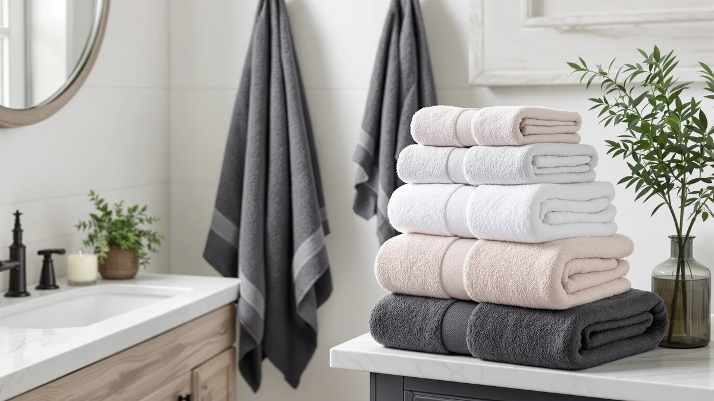

The Best Bath Towels For gym (2026)
Prices and picks verified as of September 2026. Independent, reader-supported reviews.


Quick Answer
For most people, We Sweat's two-pack microfiber towel is the best bath towel for gym use because it dries fast enough to go straight back in a duffel bag and resists the mildew smell that builds up in cotton after a sweaty session. If you want a plusher, traditional towel for showers at home, GLAMBURG's 100% cotton pair is the runner-up worth a look.
Our pick: We Sweat's (2 Pack) Microfiber, $22.95 Check Price on Amazon
Bottom line: our top pick is the We Sweat's at $22.95. The best budget option is the GLAMBURG 100% Cotton 2 Pack Oversized Bath Towel Set 28x55 at $13.86.
Things to Know Before You Buy
- Fabric decides drying speed. Microfiber towels dry roughly twice as fast as cotton terry, which matters if you're stuffing a damp towel back into a gym bag between sessions.
- Weight affects feel and dry time together. Lighter towels in the 300 to 500 GSM range balance absorbency with quick drying, while heavier 600-plus GSM cotton towels feel more plush but take longer to dry out.
- Pack size changes the math. Two-packs and four-packs cost less per towel than a single towel, and keeping several in rotation means you always have a dry one ready while another is in the wash.
- Ring-spun and combed cotton hold up longer. These weaves resist pilling and stay softer through repeated washing better than cheaper open-loop cotton.
- Wash frequency is higher for gym towels than bathroom towels. Sweat and bacteria build up faster during a workout, so machine-washable, tumble-dry-low fabrics matter more here than on a towel used only after a shower.
A good gym towel dries fast enough to reuse the same day, folds down small enough to fit next to your shoes and gear, and holds up to washing several times a week without going stiff or thin. That's a different product from a plush bathroom towel, even when they're sold in the same aisle.
Most gym towels fall into one of two fabric camps. Microfiber wicks moisture away from its surface and dries in a fraction of the time cotton terry needs, which is why it dominates our top picks below. Cotton still has a place for anyone who showers at the gym or at home right after training and doesn't need the towel dry again for hours. We compared seven towels across both fabrics, weighing drying speed, pack size, and verified owner feedback on durability.
We Sweat's two-pack microfiber towel comes out on top for most gym routines, with GLAMBURG's cotton pair, Utopia's four-packs, ecolook's budget microfiber set, and Amazon Basics' 24-pack rounding out the field for shoppers with different priorities around price, plushness, and pack size.
Why You Should Trust Us
We research bath towels the way a shopper actually buys them: by comparing verified specs, materials, and owner feedback across the field rather than picking favorites. This guide focuses on towels built for gym use specifically, prioritizing quick-dry fabric, compact folding, and wash durability over a plush hotel-towel feel. Our recommendations rely on manufacturer material data, verified buyer reviews, and price tracking rather than marketing copy, and we call out real drawbacks for every pick so you know what you're trading off before you buy.
How We Picked
We started with more than a dozen bath towels marketed for gym, travel, or athletic use and narrowed the field using four criteria. First, fabric: we prioritized microfiber and ring-spun cotton, since both dry faster and resist odor better than standard terry cotton. Second, size and pack count: gym towels need to fit in a duffel bag, so we favored options sized for that use or sold as multi-packs that let you rotate a clean one in daily. Third, verified owner feedback on durability after repeated washing, since gym towels get washed far more often than bathroom towels do. Fourth, price per towel, because a towel that needs replacing every few months isn't actually a good value even at a low upfront cost. We dropped products with a pattern of complaints about thinning, shrinking, or retaining odor after washing.
How We Compared
We do not run a physical testing lab. Instead, we compared each towel's manufacturer specifications, including material composition, weight, dimensions, and care instructions, against verified buyer reviews on Amazon. We read through owner feedback specifically for mentions of drying speed, odor retention after workouts, and how the towels held up after dozens of washes, since that timeline matters more for a gym towel than for one used occasionally. We also tracked pricing over several weeks so the value claims in this guide reflect current listings rather than a one-time sale price.
Our Picks

We Sweat's (2 Pack) Microfiber
What we like
- Microfiber fabric dries noticeably faster than cotton, based on buyer feedback
- Compact folded size takes up less space in a gym bag than a standard bath towel
- Sold as a two-pack, so you can keep one in rotation while the other is in the wash
- Several buyers mention it stays lightweight even when damp
Flaws but not dealbreakers
- Microfiber has a smoother, less plush feel than traditional terry cotton
- Some owners report the fabric feels slick against skin until it's been washed a few times
- Not oversized, so it works better as a gym or travel towel than a full bath towel at home
| Material | Microfiber |
| Size | Shower Towels |
We Sweat's two-pack microfiber towel is built around one job: drying fast enough to go back in your bag without turning into a mildew factory. Microfiber's tighter weave wicks moisture away from the fabric surface instead of only soaking it up the way cotton terry does. Several buyers say it feels dry to the touch within an hour or two of a workout, well before a comparable cotton towel would be usable again. It holds up as a dependable pick for anyone who hits the gym several times a week and doesn't want to do laundry every other day.
The tradeoff is texture. Microfiber doesn't have the plush, absorbent feel of a heavyweight cotton towel, and a few owners mention it takes several washes before the fabric softens up and stops feeling slightly synthetic against skin. For a towel used after a lifting session or a run, that's a fair trade for the drying speed. If you want something closer to a spa towel for home use, the GLAMBURG cotton pair below is the better match, though it takes longer to dry between uses.

GLAMBURG 100% Cotton 2 Pack
What we like
- Lowest price per towel of any pick in this guide, at $13.86 for two
- 100% cotton construction feels softer and more absorbent than microfiber against skin
- Reviewers consistently note it holds up well through repeated machine washing
Flaws but not dealbreakers
- Cotton terry takes longer to air dry than microfiber, so it needs a full day between uses without a dryer
- Bulkier to pack than a microfiber towel, so it takes up more room in a gym bag
- A couple of reviews mention the two-pack runs slightly smaller than standard bath towel dimensions
| Material | 100% cotton |
| Size | 2 Pack Bath Towel |
GLAMBURG's two-pack is the closest thing on this list to a traditional bath towel, and at $13.86 for two it's also the least expensive pick we compared. The 100% cotton weave absorbs water the way most people expect a towel to, and buyers often mention it feels soft against skin straight out of the pack rather than needing several washes to break in, a common complaint with cheaper cotton towels.
The catch is drying time. Cotton terry holds onto moisture longer than microfiber, so if you're rotating this towel through multiple gym sessions in the same week, you'll want both towels in active rotation rather than relying on one to dry out overnight. Owners who use it mainly for home showers rather than gym bags report fewer issues, since it has time to air dry fully between uses. If you need a towel that dries fast enough to reuse the same day, We Sweat's microfiber pick above is the better fit.

Utopia Towels 4 Pack Premium
What we like
- Four towels for $23.99 works out to roughly $6 per towel, among the better per-towel values here
- 100% cotton construction absorbs well for post-workout showers
- Having four in rotation means you're rarely stuck reaching for a still-damp towel
Flaws but not dealbreakers
- Standard cotton terry, so drying time between washes is longer than the microfiber picks
- A few reviewers describe a thinner texture than premium single-purchase bath towels
- Takes up more bag space than a compact microfiber towel if you're carrying one to the gym
| Material | 100% cotton |
| Size | 4 Pieces Bath Towel |
Utopia's four-pack solves a different problem than the other picks on this list: instead of drying fast, it gives you enough towels that drying speed barely matters. At $23.99 for four, that works out to about $6 per towel, and buyers report the set holds up well through the kind of frequent washing a gym routine demands. If you go to the gym most days of the week, having four cotton towels in rotation means you're not waiting on one to dry before your next workout.
It's still standard cotton terry, so any single towel in the set takes longer to dry than a microfiber option, and a few owners describe the fabric as thinner than towels bought individually at full price. That's a reasonable tradeoff for the per-towel cost. If bag space matters more than having a deep towel rotation, say you're commuting to the gym on foot or by bike, the compact We Sweat's microfiber pick above packs down smaller.

ecolook 4 Pack Microfiber Bath
What we like
- Four microfiber towels for $22.22, the best per-towel price among the microfiber picks in this guide
- Dries fast enough to reuse within the same day, per verified buyer reviews
- Compact enough to fit in a gym bag alongside shoes and gear
Flaws but not dealbreakers
- A number of reviews mention the fabric feels thinner than the two-pack microfiber option above
- Microfiber can pick up lint if washed in the same load as cotton items
- Colors are limited compared to the cotton packs in this guide
| Material | Microfiber |
| Size | 4 Pack Bath Towel |
ecolook's four-pack brings the same quick-dry advantage as our top microfiber pick but spreads the cost across four towels instead of two, bringing the per-towel price down to about $5.55. That makes it the pick for anyone who wants a full rotation of fast-drying towels without paying a premium for each one. Buyers frequently mention the towels dry fast enough to use again the same day, which matters if you're training twice in one week and don't want to run laundry constantly.
The fabric runs a bit thinner than We Sweat's two-pack, and a handful of owners mention it can pick up lint if washed alongside cotton items, so it's worth washing microfiber loads separately. For most gym routines, the tradeoff between a slightly thinner feel and a lower per-towel cost is a fair one. If plushness matters more than price, Utopia's cotton four-pack above is a better match.

Utopia Towels 4 Pack Premium
What we like
- Larger 27 x 54 inch dimensions offer more coverage than standard gym towel sizes
- 100% cotton construction feels soft and absorbent for full-body drying
- Four-towel set keeps a spare on hand between wash days
Flaws but not dealbreakers
- Larger size means slower drying time and more bulk in a gym bag
- At $30.99, it's the second-most expensive pick in this guide
- Not the most practical choice if you're carrying it to and from the gym daily
| Material | 100% cotton |
| Size | 27"x 54" - 4 Bath Towels |
This Utopia set trades compactness for coverage. At 27 by 54 inches, these towels run larger than the standard gym towel size, closer to a full bath towel you'd use at home, which makes them a better fit for showering after a workout at home rather than in a locker room. The 100% cotton fabric absorbs well, and having four in the set means you're covered on wash day.
The larger size cuts both ways: it's more towel to dry between uses, and more bulk if you're the one carrying it in a gym bag. At $30.99, it's also priced above most of the other picks here. For gym-goers who shower at the gym and need something that packs small, the compact microfiber picks above are the more practical choice. For home use after a workout, the extra coverage is worth the tradeoff.

Utopia Towels 4 Pack Premium
What we like
- Heavier cotton construction feels plusher than the other cotton sets in this guide
- Four-towel set supports a full weekly rotation
- Owners often mention the color holds up well after repeated washing
Flaws but not dealbreakers
- At $32.99, it's the most expensive pick in this guide
- Heavier fabric takes the longest to dry of any towel compared here
- Bulkiest option if you need to carry it to the gym rather than use it at home
| Material | 100% cotton |
| Size | 4 Pack |
This Utopia set sits at the premium end of the cotton options we compared. The heavier weight gives it a plusher, more hotel-like feel than the lighter cotton and microfiber picks above, and owners often say the color and texture hold up well wash after wash. At $32.99, it's priced for shoppers who care more about how a towel feels after a shower than how fast it dries between gym trips.
That heavier weight is also its biggest limitation for gym use specifically: a thicker cotton towel takes longer to dry than any other pick in this guide, and it's the bulkiest to pack. If your gym towel needs to dry out and go back in a bag the same day, this isn't the right choice. It works better as a home towel for post-workout showers, paired with one of the faster-drying picks above for actual gym trips.

Amazon Basics Fast Drying Cotton
What we like
- 24-pack means you're never waiting on laundry to have a clean towel ready
- Fast-drying cotton blend dries quicker than standard heavyweight terry, based on buyer feedback
- Lowest total commitment risk since running out isn't a concern with this many towels on hand
Flaws but not dealbreakers
- Individual towels are thinner than the smaller premium packs in this guide
- Not a practical option if you only need one or two towels for personal gym use
- A few buyers note sizing runs smaller than a standard bath towel
| Material | 100% cotton |
| Size | 24 Pack |
Amazon Basics takes a different approach entirely: instead of one or two premium towels, you get 24 fast-drying cotton towels for $18.39, which comes out to under $1 per towel. That math makes sense for a household with multiple gym-goers, a shared gym or studio, or anyone who would rather stock up once than manage a small rotation of higher-end towels.
The fabric is noticeably thinner than the other cotton picks in this guide, part of why it dries faster but also why a few owners describe the feel as more utilitarian than plush. For personal use, that thinner weave is actually an advantage for gym trips since it dries and packs faster than a heavyweight towel. If you only need one or two towels rather than two dozen, the We Sweat's or ecolook microfiber picks above offer a similar drying advantage at a more practical pack size.
Quick Comparison
This table lines up every pick from our best bath towels for gym guide by material, price, and best use case.
| Product | Material | Price | Rating | Best for | Get it |
|---|---|---|---|---|---|
| We Sweat's (2 Pack) Microfiber | Microfiber | $22.95 | 4 | Fast drying, gym bags | View on Amazon → |
| GLAMBURG 100% Cotton 2 Pack | 100% cotton | $13.86 | 4 | Budget-friendly plush cotton | View on Amazon → |
| Utopia Towels 4 Pack Premium | 100% cotton | $23.99 | 4 | Deep towel rotation | View on Amazon → |
| ecolook 4 Pack Microfiber Bath | Microfiber | $22.22 | 4 | Low-cost quick dry | View on Amazon → |
| Utopia Towels 4 Pack Premium | 100% cotton | $30.99 | 4 | Extra coverage | View on Amazon → |
| Utopia Towels 4 Pack Premium | 100% cotton | $32.99 | 4 | Plush hotel feel | View on Amazon → |
| Amazon Basics Fast Drying Cotton | 100% cotton | $18.39 | 4 | Bulk stockpiling | View on Amazon → |
The Competition
Several towels and sets didn't make this guide, and the reasons line up with what actually matters for a gym bag rather than a home bathroom.
PVA chamois towels. These synthetic, squeegee-like sheets are marketed heavily to swimmers and campers. They dry almost instantly and pack down to nearly nothing, but reviewers often say they feel unpleasant against skin and tend to stiffen after a few uses, which ruled them out for a towel you're using directly on your body after a workout.
Hooded and wearable gym towels. These solve a real problem, hands-free drying, but sacrifice the flat, foldable shape that makes a towel easy to pack tight in a gym bag. Owner reviews skew toward complaints about bulk and awkward fit outside of a locker room setting.
Single-count towels with no multi-pack option. Gym towels get washed constantly, and reviewers who buy only one towel often mention having to do laundry more often or going without a clean towel on busy weeks, which is why every pick in this guide comes as part of a two-pack or larger.
The bottom line: across the field we compared, We Sweat's two-pack microfiber towel is the best bath towel for gym use for most people, thanks to its fast drying time and compact size. Shoppers who want more plushness or a bigger stockpile have solid alternatives above in GLAMBURG, Utopia, ecolook, and Amazon Basics, but We Sweat's remains the pick that best matches how a gym towel actually gets used.
Frequently Asked Questions
Is microfiber or cotton better for a gym towel?
Microfiber is the better choice for most gym routines because it dries roughly twice as fast as cotton and packs down smaller in a bag. Cotton feels softer and more absorbent, so it works better for a leisurely shower at home where drying speed and bag space don't matter as much.
How often should you wash a gym towel?
Wash a gym towel after every one or two uses. Sweat and bacteria build up faster on a towel used during exercise than on one used right after a shower, so treat gym towels closer to workout clothes than to bathroom towels on your laundry schedule.
What size towel is best for the gym?
A compact towel in the 24 by 48 inch range is the most practical size for gym use. It covers enough to dry off and wipe down equipment without taking up the bag space or drying time of a full bath sheet.
Do gym towels smell even after washing?
A lingering musty smell usually means the towel sat damp for too long before it was washed or fully dried. Owners tend to report fewer odor complaints with microfiber towels, since the fabric holds less moisture than cotton terry between washes.